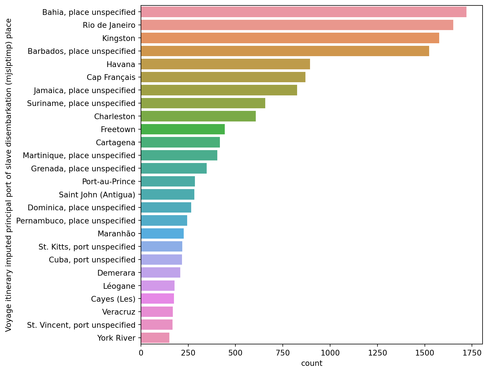
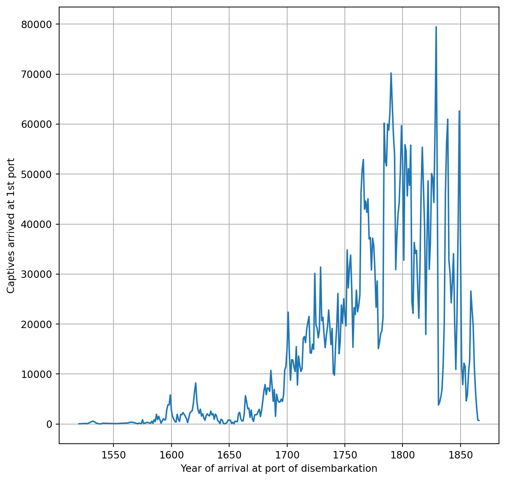

import pandas as pddata_file ='data/data.csv'df = pd.read_csv(data_file)cleaned_df = df.drop('VOYAGEID2',axis=1).dropna(subset=['Captives arrived at 1st port']).fillna("unknown")cleaned_col_names = cleaned_df.columnscleaned_df.head(10)
Year of arrival at port of disembarkation
Voyage ID
Vessel name
Voyage itinerary imputed port where began (ptdepimp) place
Voyage itinerary imputed principal place of slave purchase (mjbyptimp)
Voyage itinerary imputed principal port of slave disembarkation (mjslptimp) place
Captives arrived at 1st port
Captain's name
0
1714.0
16109
Freeke Gally
Bristol
unknown
Kingston
283.0
Neale, Alexander
2
1714.0
16111
Jacob
Bristol
unknown
Kingston
130.0
Nicholls, Philip
3
1714.0
16112
Jason Gally
Bristol
unknown
Port Royal
278.0
Plummer, John
5
1714.0
16114
Mercy Gally
Bristol
Africa, port unspecified
Barbados, place unspecified
190.0
Scott, John
6
1714.0
16115
Mermaid Gally
Bristol
Cape Verde Islands
Kingston
72.0
Banbury, John<br/> Copinger, James
8
1714.0
16117
Peterborough
Bristol
Africa, port unspecified
Barbados, place unspecified
200.0
Shawe, John<br/> Martin, Joseph
9
1713.0
16118
Resolution
Bristol
Gold Coast, port unspecified
Barbados, place unspecified
255.0
Williams, Charles
10
1714.0
16119
Richard and William
Bristol
unknown
Port Royal
55.0
Beckham, George<br/> Spring, Martin
11
1713.0
16120
Rotchdale Gally
Bristol
Africa, port unspecified
Barbados, place unspecified
96.0
Hitchings, John
12
1714.0
16121
Tunbridge Gally
Bristol
Africa, port unspecified
Barbados, place unspecified
200.0
Skinner, Peter
print("Index) Column name") for i,name inenumerate(cleaned_df.columns): print(i,")",name)
Index) Column name
0 ) Year of arrival at port of disembarkation
1 ) Voyage ID
2 ) Vessel name
3 ) Voyage itinerary imputed port where began (ptdepimp) place
4 ) Voyage itinerary imputed principal place of slave purchase (mjbyptimp)
5 ) Voyage itinerary imputed principal port of slave disembarkation (mjslptimp) place
6 ) Captives arrived at 1st port
7 ) Captain's name
Data Analysis
It is finally time to ask questions to our data. Let’s start with some simple ones regaring the time span of our dataset.
Question(s)
What's the year of the very first and last voyage record?
How many years does our data set span?
How does that compare to unfiltered data?
What to do?
Go through the "Year of arrival at port of disembarkation" column and look for the largest and smallest number;
Repeat the same procedure for the raw data set and compare.
(Python) Tools
pandas method .iloc();
Python functions min() and max();
Python print() function.
Coding
arrival_year = cleaned_df.iloc[:,0], we use the method .iloc[] to select the first column of the DataFrame cleaned_df and we store the column in the variable arrival_year;
, we use the Python functions min() and max() to compute the minimum and maximum values of the year column storing their values in first_year and last_year, respectively. We also compute the difference between these two values and store the result in year_span.
Our cleaned data spans from 1520 to 1866, so 346. Comparing these numbers with our original, uncleaned, DataFrame, we can notice that the filtered data does not include the period between 1514 and 1520, so 6 years.
We can keep asking questions about numerical values. We focused on time in our last question, let’s focus on the number of captives this time.
Question(s)
How many captives have been disembarked between 1520 and 1866?
How many captives have been disembarked on average per voyage?
How many captives have been disembarked on average per year?
How do these numbers change looking at the raw data?
What to do?
Go through the "Captives arrived at 1st port" column and compute the total number of captives;
Divide the previous result by the number of voyages;
Divide the total number of captives by the number of years;
Adjust the previous estimates considering the average number of captives per voyage and the number of filtered rows.
(Python) Tools
pandas method .iloc();
Python function sum();
Python function len();
Python function round();
Python function print() .
Coding
n_captives = cleaned_df.iloc[:,6], we apply the method .iloc[] to select the "Captives arrived at 1st port" column and we store the column in the variable n_captives;
tot_captives = sum(n_captives), we use the Python function sum() to compute the sum of all the values in n_captives and we stored the result in the variable tot_captives
, we use the total number of captives just computed to calculate the average number of captives per vorage (dividing it by the number of rows) and per year (dividing it by the year span). We store the result in ave_cap_per_voyage and ave_cap_per_year, respectively;
, we compute the number of filtered rows subtracting the length of our original DataFrame df by the length of our cleaned DataFrame cleaned_df. Multiplying this number by the average number of captives per voyage (remember that in our DataFrames each row corresponds to a voyage), we obtain an estimate of the number of captives that have not been considered as the corresponding data is missing and, as such, it has been filtered out from our analysis. We store this estimate in the variable tot_captives_ext. We then adjust our estimate of the number of captives per years using this value and dividing it by year_span_raw, the year span of our original DataFrame. We store this value into the variable ave_cap_per_year_adj;
print(round()), we print different results related to people using the Python function round() that, without any other argument, approximate decimal numbers to the closest integer.
n_captives = cleaned_df.iloc[:,6]tot_captives =sum(n_captives)ave_cap_per_voyage = tot_captives/len(cleaned_df)ave_cap_per_year = tot_captives/year_spanprint('Total n. of captives:',tot_captives)print('Average captives per voyage',round(ave_cap_per_voyage))print('Average captives per year',round(ave_cap_per_year))
Total n. of captives: 5082756.0
Average captives per voyage 276
Average captives per year 14690
filtered_rows =len(df)-len(cleaned_df)tot_captives_ext = tot_captives + ave_cap_per_voyage*filtered_rowsave_cap_per_year_adj = tot_captives_ext/year_span_rawprint('Extimated total n. of captives',round(tot_captives_ext))print('Adjusted average captives per year', round(ave_cap_per_year_adj))
Extimated total n. of captives 9981894
Adjusted average captives per year 28358
Answer
Our first estimate of the total number of captives was 5 082 756 in the time period between 1520 and 1866, and a corresponding average of captives per year of 14 690. However, this estimate did not take into account filtered data. In our data filtering we excluded many rows, so many voyages. Almost 50% of the initial voyages has been filtered our. We therefore computed the average of captives per voyage and estimated the number of filtered out captives. The result is a number that almost double (as expected) our previous estimate: 9 981 894 people, with an average of 28 358 people traded per year.
So far we computed numbers, but data can be most effectively described using visualization. In our DataFrame we have information about three different locations: the place where the voyage started, the principal port of slave purchase, and the principal port of slave disembarkation. Let’s have a closer look at these locations.
Question(s)
Which is the town where most of the voyages started?
Can we sort towns according to the number of voyages that started there?
How about the other two locations, place of slave purchase and disembarkation?
What to do?
Go through the "Voyage itinerary imputed port where began (ptdepimp) place" column and count how many times a town name occurs;
Repeat this procedure for all the towns;
Sort towns according to how many times their names show up;
Make a plot with town names on the vertical axis and how many times they have been starting point for voyages in the orizontal axis;
Repeat the same procedure for the other two locations: port of slave purchase and disembarkation.
(Python) Tools
pandas method .iloc[]
pandas method .value_counts()
Python package seaborn;
Python package matplotlib.pyplot;
matplotlib.pyplot function .subplots();
seaborn function .barplot()
Coding
start_port = cleaned_df.iloc[:,3], we use the pandas method .iloc[] to select our target column. In this case it is "Voyage itinerary imputed port where began (ptdepimp) place", the fourth column of our DataFrame (Python index 3). We store this column in the variable start_port;
start_port_counts = start_port.value_counts(), we want to count how many times a certain town name occurs in our column and the pandas method .value_counts() does exactly this. After applying the method, we obtain a pandas DataFrame with a single column (a Series) having as index the name of the town and as value the number of times that town shows up in the column start_port. We store this result in start_port_counts;
start_port_counts, we display the content of the variable start_port_counts on the screen;
import seaborn as sns, we import the Python package seaborn and we give it the alias sns. This means that, from now own, if we want to use a certain function belonging to this package, we will call it using: sns.function_name();
import matplotlib.pyplot as plt, we import the Python package matplotlib.pyplot and we give it the alias plt;
fig, new_ax = plt.subplots(nrows=1,ncols=1,figsize=(8,8)), we use the matplotlib.pyplot function .subplots() to initialise an empty plot. .subplots() it is generally used to create a grid of plots and its first two arguments (nrows and ncols) specify the number of rows and columns in this grid. In our case, we just want a single plot, therefore we specify a grid having only one column and one row. The parameter figsize specifies the size of the figure in inches. In our case ((8, 8)) it will be 8 inches wide and 8 inches high. This function returns two different objects: a Figure and an Axes. The Figure is the white space where we are going to put our plot, it is our plot container. The Axes, despite its name, it is the plot itself. We did not initialise our plot yet, so the Axes object is empty, but this is one of the standard procedure in Python: first create the space where to plot, then plot the data. Figure and Axes are stored in the variables fig and new_ax, respectively;
filter = start_port_counts > 50, if we plot ALL our data, the plot is going to look overcrowded. For this reason, we can specify a threeshold and plotting only towns that appear a number of times that is higher than our threeshold. In our case, and in the specific case of this plot, this number will be 50. start_port_counts > 50 is a Python condition, it basically creates an array with the same size and features of start_port_counts containing boolean values (True and False) instead of numerical values. When True and when False? If a value in start_port_counts is higher than 50, the corresponding boolean value will be True, otherwise it will be False. We store this boolean array in the variable filter as this can be used as a mask to filter out only those values corresponding to True from an array with its same dimention and features;
, we use the seaborn function .barplot() to create (guess what??) a barplot. The barplot will be located in our just created Axes object, this is implemented using the argument ax=new_ax. We need to specify which data to plot in the horizontal x and y axis. We want to plot town name in the y axis and town name counts in the y axis. We also want to display only those data with more than 50 counts. We can obtain this with x=start_port_counts[filter] and y=start_port_counts.index[filter], as the town name is specified in the start_port_counts index and the town counts in the start_port_counts values;
We repeat the same procedure for the fifth and sixth column of our DataFrame.
Voyage itinerary imputed port where began (ptdepimp) place
Liverpool 3227
unknown 2005
London 1874
Bahia, place unspecified 1815
Rio de Janeiro 1464
...
Mangaratiba 1
Mediterranean coast (France) 1
Canasí 1
Santa Catarina 1
Portland 1
Name: count, Length: 176, dtype: int64
import seaborn as snsimport matplotlib.pyplot as pltfig, new_ax = plt.subplots(nrows=1,ncols=1,figsize=(8,8))filter= start_port_counts >50x_data = start_port_counts[filter]y_data = start_port_counts.index[filter] sns.barplot(ax=new_ax,x=x_data,y=y_data)
<Axes: xlabel='count', ylabel='Voyage itinerary imputed port where began (ptdepimp) place'>
Voyage itinerary imputed principal place of slave purchase (mjbyptimp)
Africa, port unspecified 3177
Luanda 1447
West Central Africa and St. Helena, port unspecified 1139
Bonny 853
Gold Coast, port unspecified 787
...
Petit Mesurado 1
Eva 1
Pokesoe (Princes Town) 1
Sassandra 1
Sugary (Siekere) 1
Name: count, Length: 161, dtype: int64
Voyage itinerary imputed principal port of slave disembarkation (mjslptimp) place
Bahia, place unspecified 1720
Rio de Janeiro 1651
Kingston 1576
Barbados, place unspecified 1524
Havana 893
...
France, place unspecified 1
Santa Marta 1
Dois Rios 1
Maceió 1
Bonny 1
Name: count, Length: 240, dtype: int64
<Axes: xlabel='count', ylabel='Voyage itinerary imputed principal port of slave disembarkation (mjslptimp) place'>

Answer
The ports where most of the voyages took place are Liverpool and London (with a considerable percent being unkown). Most of the places where slaves have been purchased remain unkown, the second most occuring purchanse place is Luanda (mid Africa). The most frequent places of disimbarkation are Bahia and Rio de Janeiro, on the opposite side of the Atlantic Ocean at a similar latitude.
Let’s try to make now a different type of visualization, a time series, i.e. a plot where we see how parameters change over time
Question(s)
How does the total number of disembarkated captives change over time?
What to do?
Consider the data set columns containing information about time and number of captives
Group data rows by year
Sum the number of captives per year
Make a plot with years (time) on the x axis and number of captives on the y axis
Locate the minimum and the maximum of captives per year
(Python) Tools
pandas method .groupby();
parnas method .mean();
Python package matplotlib.pyplot;
Python package seaborn;
matplotlib.pyplot function .subplots();
seaborn function .lineplot();
matplotlib.pyplot function .grid();
pandas method .idxmin();
pandas method .idxmax();
Python function print()
Coding
col_to_group = "Year of arrival at port of disembarkation"
col_to_sum = "Captives arrived at 1st port"
, we select the two columns in the DataFrame we are interested in, the one containing the time information and the one containing the number of captives. We store the name of these two columns in the variables col_to_group and col_to_sum, respectively;
df_per_year = cleaned_df.groupby(col_to_group)[col_to_average].sum(), we first apply the method .groupby() to our cleaned DataFrame. .groupby() does exactly what it says, it groups data according to a certain column (in our case the col_to_group column), this means that any other method we are going to apply from now own, it will operate on groups of rows instead of the entire DataFrame. For example, if we apply a method perfoming summation or average on a DataFrame grouped by year, python will compute the sum or the average on those groups of data. In a DataFrame there are many columns containing values to sum and average, so which column is Python going to choose? We need to specify it, in our case we do that with [col_to_sum], where the column to sum contains information about the number of captives. We finally apply the method .sum() to compute the sum of number of captives on DataFrame rows grouped by year. We store the result in the variable df_per_year;
sum_df_per_year, we display our last result on the screen;
fig, my_ax = plt.subplots(nrows=1,ncols=1,figsize=(8,8)), we use the function .subplots() to create a single squared empty plot with size 8 inches. We obtain a Figure object (the container of our plot) and a Axes object (an empty plot). We store these two objects in the variables fig and my_ax;
sns.lineplot(ax=my_ax,x=sum_df_per_year.index,y=sum_df_per_year), we use the method .lineplot() to create a line plot (data points connected by a line). We plot the index of the Series (a Series is a DataFrame with only one column) df_per_year on the x axis and its values on the y axis.
plt.grid(), we use the function .grid() to overplot a grid on our plot, with the purpose of better describe the data by eye;
max_index = df_per_year.idxmax();
min_index = df_per_year.idxmin();
min_year = df_per_year[min_index]
max_year = df_per_year[max_index]
print('Min. n. of captives per year:', min_year,'on',min_index);
print('Max. n. of captives per year:', max_year,'on',max_index).
, we apply the method .idxmax() to the Series df_per_year to get the index corresponding to the maximum of its values. Remember that df_per_year indeces are year and its values are the sum of number of captives in that year. Therefore, obtaining the index corresponding to the maximum value means determining the year having the maximum number of captives. We store this result in the variable max_index. We can use this index to retrieve the corresponding value: df_per_year[max_index]. We repeat the same procedure for the minimum value using .idxmin(). We finally print both results on the screen with the function print().
col_to_group ='Year of arrival at port of disembarkation'col_to_sum ='Captives arrived at 1st port'df_per_year = cleaned_df.groupby(col_to_group)[col_to_sum].sum()print(df_per_year.shape)df_per_year
(298,)
Year of arrival at port of disembarkation
1520.0 44.0
1526.0 115.0
1527.0 46.0
1532.0 589.0
1534.0 354.0
...
1862.0 11407.0
1863.0 6739.0
1864.0 3298.0
1865.0 795.0
1866.0 700.0
Name: Captives arrived at 1st port, Length: 298, dtype: float64
/opt/anaconda3/lib/python3.11/site-packages/seaborn/_oldcore.py:1119: FutureWarning:
use_inf_as_na option is deprecated and will be removed in a future version. Convert inf values to NaN before operating instead.
/opt/anaconda3/lib/python3.11/site-packages/seaborn/_oldcore.py:1119: FutureWarning:
use_inf_as_na option is deprecated and will be removed in a future version. Convert inf values to NaN before operating instead.

max_index = df_per_year.idxmax()min_index = df_per_year.idxmin()min_year = df_per_year[min_index]max_year = df_per_year[max_index]print('Min. n. of captives per year:', min_year,'on',min_index)print('Max. n. of captives per year:', max_year,'on',max_index)
Min. n. of captives per year: 2.0 on 1538.0
Max. n. of captives per year: 79472.0 on 1829.0
solution ='The total number of captives is almost constant up to 1650, with the exception of two peaks around 1600 \and 1622. The number increases steadily up to 1800 and decreases afterwords. The times series is not smooth, but it proceeds \by low and high peek. The number of captives per year reaches its maximum on 1829 with almost 80 thousands slaves traded \that year. The minimum is 2 captives on 1538.'question_box(solution=solution)
Answer
The total number of captives is almost constant up to 1650, with the exception of two peaks around 1600 and 1622. The number increases steadily up to 1800 and decreases afterwords. The times series is not smooth, but it proceeds by low and high peek. The number of captives per year reaches its maximum on 1829 with almost 80 thousands slaves traded that year. The minimum is 2 captives on 1538.
Time series are very interesting to describe the trends of phenomema at different scale. Our plot ticks are separated by 50 years, this is fine to visualise trends over centuries, but we cannot see what’s happening on decades.
Question(s)
What's the disembarked captive trend between 1700 and 1750?
What to do?
Go through the steps for making the previous plot filtering data spanning between 1700 and 1750
(Python) Tools
Python package matplotlib.pyplot;
Python package seaborn;
matplotlib.pyplot function .subplots();
seaborn function .lineplot();
matplotlib.pyplot function .grid().
Coding
time_filter = (df_per_year.index > 1700) & (df_per_year.index < 1750), we start using the pandas Series df_per_year. This series contains information about the total number of captives per year. Years are contained in its index, number of captives in its values. We want to select data between 1700 and 1750, so with years larger than 1700 and smaller than 1750. We do that using two Python conditions: df_per_year.index > 1700 and df_per_year.index < 1750. As we want these two conditions to be true at the same time, we specify both of them with the symbol & in between. In Python, the commertial & indicates a logical AND, this means that the condition before and after the AND must both be simultaneously true. We store this condition into the variable time_filter;
, as we did in the previous task, we plot total number of captives versus years. This time, instead of using our full array, we want to plot only a certain time range. This has been specified in the condition stored into time_filter. Therefore, compared to our previous plot, we are going to user df_per_year.index[time_filter] and df_per_year[time_filter] instead of df_per_year.index and df_per_year, respectively.
/opt/anaconda3/lib/python3.11/site-packages/seaborn/_oldcore.py:1119: FutureWarning:
use_inf_as_na option is deprecated and will be removed in a future version. Convert inf values to NaN before operating instead.
/opt/anaconda3/lib/python3.11/site-packages/seaborn/_oldcore.py:1119: FutureWarning:
use_inf_as_na option is deprecated and will be removed in a future version. Convert inf values to NaN before operating instead.